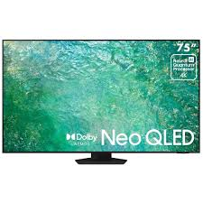

Smart TV 75" 4K UHD QLED

Disfruta de imágenes impresionantes con colores vibrantes, sonido envolvente y la última tecnología en Smart TV con inteligencia artificial.
- 📺 Pantalla de 75" 4K UHD QLED
- 🎶 Sonido Dolby Atmos envolvente
- 🤖 Funciones inteligentes con IA
- ⚡ Streaming ultra rápido
🔥 Oferta Especial: $6.999.900 ➡️ $5.499.900
¡No dejes pasar esta oportunidad y lleva la mejor tecnología a tu hogar!
¡Transforma tu experiencia de entretenimiento con el televisor, con pantalla QLED! Su sistema Google TV ofrece acceso a +10,000 apps, con una interfaz intuitiva y perfiles personalizables para toda la familia.
Estos son los principales usos que el sector retail da a los SMS
Los negocios pertenecientes al sector retail han sabido cómo sacar partido a los mensajes que se envían a los teléfonos móviles. Desde hace ya algunos años, los casos de uso del SMS son tan diversos como exitosos. En este artículo recopilamos algunos de los principales.